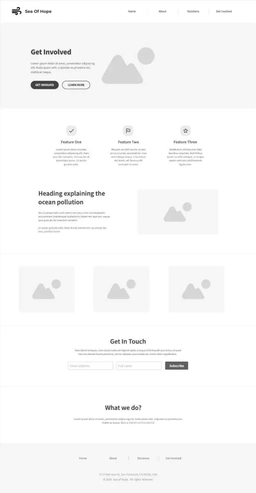
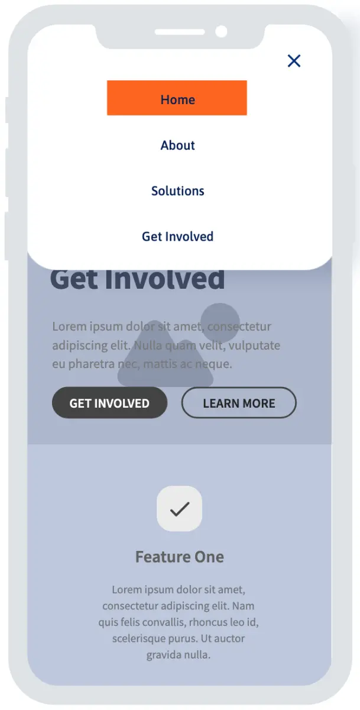

Website Logo

Site Purpose
The purpose of the website is to raise awareness about ocean pollution, educate visitors on its causes and effects, and encourage responsible actions to protect marine ecosystems. The site aims to inform users about pollution issues, highlight local and global impacts, and promote community involvement through education, advocacy, and sustainable practices.
Target Market
The target market includes environmentally conscious individuals, students, educators, coastal communities, nonprofit organizations, and citizens interested in environmental protection. The primary audience ranges from teenagers to adults (ages 15–55) who use the internet to learn, engage with causes, and take action on environmental issues. Secondary audiences include volunteers, donors, and policymakers.
Site Goals
- Educate users about ocean pollution and its environmental impacts.
- Increase public awareness and understanding of pollution sources and consequences.
- Promote environmental initiatives, cleanups, and educational resources.
- Provide clear calls to action such as volunteering, learning, and sharing information.
User Persona
- Name: Sofia Gonzalez Age: 22 Occupation: University Student Location: Guatemala City Goals: Learn about ocean pollution, support environmental causes, and participate in local cleanups Frustrations: Lack of clear information and limited access to local environmental initiatives Tech Skills: Comfortable using mobile devices and social media.
Scenarios
- A student researching environmental issues visits the site to learn about ocean pollution for a class project and finds clear explanations and credible resources.
- A volunteer looking to help uses the site to find upcoming beach cleanup events and ways to get involved.
- A concerned citizen wants to understand how daily habits affect ocean pollution and discovers practical tips to reduce waste.
SEO Plan
- Keywords: ocean pollution, marine pollution, plastic waste, ocean conservation, environmental awareness.
- Local SEO: Include regional references (e.g., Guatemala, coastal ecosystems).
- Content Strategy: Publish educational articles, statistics, and updates on pollution initiatives.
- Performance & Accessibility: Optimize page speed, mobile responsiveness, and accessibility to improve search ranking.
Color Palette
These are the four (4) labeled 'names' that we will use in the CSS.
Navigation
Wireframes
Directory

Mobile version
